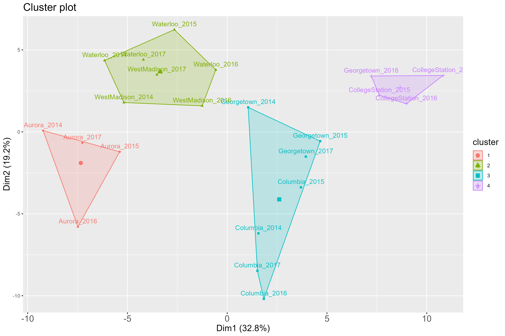
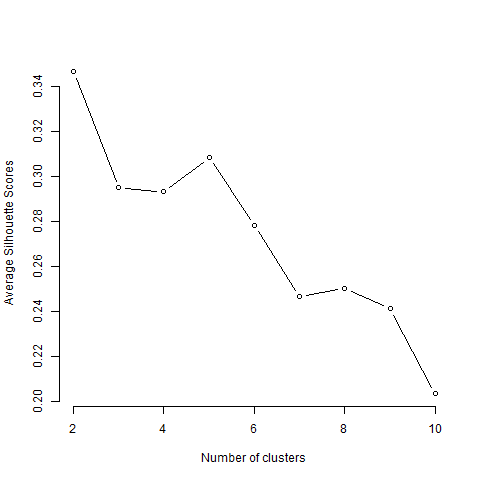

Create a METData object with weather data retrieved by nasapower
Cathy Westhues
2021-10-28
Source:vignettes/vignette_getweatherdata.Rmd
vignette_getweatherdata.RmdStep 1-A: Specifying input data and processing parameters
In this example, we will show how to create a METData object when one needs to obtain weather data from external data source. In the package, weather information from the NASA/POWER is extracted and aggregated in day-windows which will be thereafter used (in step 2) as environmental predictor variables.
The user must provide as input data genotypic and phenotypic data, as well as basic information about the field experiments (e.g. longitude, latitude, planting and harvest date necessary to retrieve weather data from the growing season). These input data are checked and warning messages are given as output if the data are not correctly formatted.
In this example, we use data from the Genomes to Fields dataset (AlKhalifah et al. (2018), McFarland et al. (2020)), which is implemented in the package as a toy dataset. For this dataset, soil variables are available and we will retrieve weather data using the nasapower package (Sparks (2018)) for the 22 environments included in the dataset. (more information on the datasets with ?pheno_G2F,?geno_G2F,?map_G2F,?climate_variables_G2F,?info_environments_G2F, ?soil_G2F).
In this case, soil covariates by environment are available and can be used in predictions. These data should be provided as input in create_METData() using the argument soil_variables. To get weather data from NASA/POWER, one must set the argument compute_climatic_ECs to TRUE.
Do not forget to indicate where the daily weather data and the plots of clustering analyses should be saved using the argument path_to_save.
The daily weather data will be saved in a subdirectory of this directory that is automatically created and called weather_data.
The method used to build environmental covariates based on daily weather data is the default one: “fixed_nb_windows_across_env,” which means that in each environment, the growing season is split into a number of windows equal to nb_windows_intervals (by defaultm this value is equal to 10). To get more information on the different methods implemented in the package to build climatic environmental variables based ond daily weather information, please refer to the documentation of the function get_ECs().
library(learnMET)
data(geno_G2F)
data(pheno_G2F)
data(map_G2F)
data(info_environments_G2F)
data(soil_G2F)
METdata_G2F <-
create_METData(
geno = geno_G2F,
pheno = pheno_G2F,
map = map_G2F,
climate_variables = NULL,
compute_climatic_ECs = TRUE,
info_environments = info_environments_G2F,
soil_variables = soil_G2F,
path_to_save = '~/learnMET_analyses/G2F'
)
## No climate covariates provided by the user.
## Computation of environmental covariates starts.
## Warning: Coercing info_environments_G2F$planting.date to class 'POSIXct'.
## Warning: Coercing info_environments_G2F$harvest.date to class 'POSIXct'.
## Daily weather tables downloaded from NASA POWER for the required environments!
## The base temperature used is 10
## Computation of environmental covariates is done.The function print.summary.METData() gives an overview of the created MET data object.
summary(METdata_G2F)
## object of class 'METData'
## --------------------------
## General information about the MET data
##
## No. of unique environments represented in the data: 22
## unique years represented in the data: 4
## unique locations represented in the data: 6
##
## Distribution of phenotypic observations according to year and location:
##
## Aurora CollegeStation Columbia Georgetown Waterloo WestMadison
## 2014 212 236 244 224 181 200
## 2015 347 290 411 407 345 0
## 2016 228 197 328 227 207 303
## 2017 187 0 217 163 171 266
## No. of unique genotypes which are phenotyped
## 1913
## --------------------------
## Climate variables
## Weather data extracted from NASAPOWER for main weather variables?
## YES
## No. of climate variables available: 100
## --------------------------
## Soil variables
## No. of soil variables available: 4
## --------------------------
## Phenotypic data
## No. of traits: 3
##
## pltht yld_bu_ac earht
## Min. :117.2 Min. : 2.814 Min. : 48.0
## 1st Qu.:206.0 1st Qu.:114.641 1st Qu.:100.5
## Median :232.5 Median :152.345 Median :115.6
## Mean :227.2 Mean :147.758 Mean :114.0
## 3rd Qu.:251.0 3rd Qu.:181.874 3rd Qu.:128.5
## Max. :351.0 Max. :344.631 Max. :195.0
## NA's :43 NA's :1072
## --------------------------
## Genotypic data
## No. of markers : 106414
## --------------------------
## Map data
## No. of chromosomes 10
##
## markers per chromosome
##
## 1 2 3 4 5 6 7 8 9 10
## 16815 12533 11852 9507 13658 8151 8414 8936 8273 8275Step 1-B: Look at the results from the clustering analyses
The create_METData() function integrates clustering analyses with the kmeans algorithm (Hartigan and Wong (1979)) on environmental variables.
In the directory corresponding to the path_to_save argument, a subdirectory called clustering_analysis is created, which contains 3 additional subdirectories: only_weather, which contains clustering plots based on solely weather-based variables; only_soil, which contains clustering plots based on solely soil variables; and all_env_data, which contains clustering plots based on all environmental variables (soil + weather-based).
All clustering analyses are performed with different K (number of clusters), and corresponding plots are generated for a range of k values. In addition, plots to visualize the total within-cluster sums of squares (elbow method) and the average Silhouette score (Hartigan and Wong (1979)) - metric obtained with the cluster package (Maechler et al. (2021))) for a range of k values are also saved in the adequate folders. These latter plots can be useful to assess the best number of clusters to consider.
NOte that for the clustering analyses are run with nstart = 25 so that the k-means algorithm create multiple initial configurations and outputs the best one.
For instance, with k = 4,below is the plot of how environments included in this MET dataset cluster, with k = 4: 
Below is the plot obtained for the elbow method with different k values: one should decide on the number of clusters so that, when adding another cluster, it does not improve much the total intra-cluster variation (that we want to minimize). In this case, 4 seems to be not so bad!
The Silhouette score is also used to validate results from clustering. It gives a measure of how well observations are clustered with other observations within a cluster. It is calculated for each observation of the dataset, and the final metric corresponds to the average over all observations for a given k. A large average Silhouette score reflects that observations are well clustered with this k number of clusters.
Here, 5 seems to be a better choice based on the Silhouette score. 
Step 1-C: Computing environmental covariates: different methods possible
In the first chunk of code presented above, daily weather data have been saved in a folder called weather_data. We can load these daily weather tables from NASA/POWER, and then implement different methods to build day-windows (using the argument method_ECs_intervals) which will represent climate variables for the ML-based prediction models. To re-use the daily weather data obtained via the NASA/POWER query, just specify these with the argument raw_weather_data (see example below). These data will be analyzed as
For instance with “fixed_length_time_windows_across_env” as below, with day-windows computed in each environment with a width of 8 days:
Note: be careful to use a different path so that the clustering analyses results obtained with the different environmental datasets do not overlap!
daily_weather_tables_g2f <- readRDS("daily_weather_tables_nasapower.RDS")
METdata_G2F_2 <-
create_METData(
geno = geno_G2F,
pheno = pheno_G2F,
map = map_G2F,
climate_variables = NULL,
compute_climatic_ECs = TRUE,
raw_weather_data = daily_weather_tables_g2f,
method_ECs_intervals = "fixed_length_time_windows_across_env",
duration_time_window_days = 8,
info_environments = info_environments_G2F,
soil_variables = soil_G2F,
path_to_save = '~/learnMET_analyses/G2F/method_2'
)
## No climate covariates provided by the user.
## Computation of environmental covariates starts.
## Raw weather data are provided by the user and will be used to build environmental covariates.
## QC on daily weather data starts...
##
## Attaching package: 'lubridate'
## The following objects are masked from 'package:base':
##
## date, intersect, setdiff, union
## Actual vapor pressure (ea) calculated from relative humidity using RH2M (mean RH).
## QC on daily weather data is done!
## A file with flagged values has been saved in the subfolder weather_data.
## The base temperature used is 10
## Computation of environmental covariates is done.
summary(METdata_G2F_2)
## object of class 'METData'
## --------------------------
## General information about the MET data
##
## No. of unique environments represented in the data: 22
## unique years represented in the data: 4
## unique locations represented in the data: 6
##
## Distribution of phenotypic observations according to year and location:
##
## Aurora CollegeStation Columbia Georgetown Waterloo WestMadison
## 2014 212 236 244 224 181 200
## 2015 347 290 411 407 345 0
## 2016 228 197 328 227 207 303
## 2017 187 0 217 163 171 266
## No. of unique genotypes which are phenotyped
## 1913
## --------------------------
## Climate variables
## Weather data extracted from NASAPOWER for main weather variables?
## NO
## No. of climate variables available: 160
## --------------------------
## Soil variables
## No. of soil variables available: 4
## --------------------------
## Phenotypic data
## No. of traits: 3
##
## pltht yld_bu_ac earht
## Min. :117.2 Min. : 2.814 Min. : 48.0
## 1st Qu.:206.0 1st Qu.:114.641 1st Qu.:100.5
## Median :232.5 Median :152.345 Median :115.6
## Mean :227.2 Mean :147.758 Mean :114.0
## 3rd Qu.:251.0 3rd Qu.:181.874 3rd Qu.:128.5
## Max. :351.0 Max. :344.631 Max. :195.0
## NA's :43 NA's :1072
## --------------------------
## Genotypic data
## No. of markers : 106414
## --------------------------
## Map data
## No. of chromosomes 10
##
## markers per chromosome
##
## 1 2 3 4 5 6 7 8 9 10
## 16815 12533 11852 9507 13658 8151 8414 8936 8273 8275If one has information about the phenological stages in each environment (either by observations done from the field, or from results from a crop growth model, for instance Sirius (Jamieson et al. (1998)) or APSIM (Keating et al. (2003), Holzworth et al. (2014)), one can provide a table which indicates at which day after planting the crop has reached a new developmental stage. This table should be provided as input via the argument intervals_growth_manual, and the method for computing climate variables should now be chosen as “user_defined_intervals.”
The names of each developmental stage can be indicated in the column names, which can be useful after analyses to identify which wether-based covariate had more weight in the machine learning model used. An example of a table is given as example data in the package (see below). The example provided is given to illustrate how the user should format the table, but was not created to reflect the true growth stage of the crop in these environments!
In this case, each growth period is estimated for all genotypes tested in this environment: the package does not incorporate at the moment specificity at the genotype level to take into account genotypic variation regarding plant development and phenology. For more information on this topic, please have a look at the following publications: Heslot et al. (2014), Technow et al. (2015), Rincent et al. (2019).
| year | location | P | VE | V5 | V12 | R1 | R3 | R6 |
|---|---|---|---|---|---|---|---|---|
| 2014 | Aurora | 0 | 7 | 21 | 44 | 63 | 91 | 119 |
| 2014 | CollegeStation | 0 | 7 | 21 | 44 | 63 | 91 | 119 |
| 2014 | Columbia | 0 | 7 | 21 | 44 | 63 | 91 | 119 |
| 2014 | Georgetown | 0 | 7 | 21 | 44 | 63 | 91 | 119 |
| 2014 | Waterloo | 0 | 7 | 21 | 44 | 63 | 91 | 119 |
| 2014 | WestMadison | 0 | 7 | 21 | 44 | 63 | 91 | 119 |
One can also modify the base temperature (using the argument base_temperature - see example below) which is used to estimate accumulated GDD in each environment. The value of the base temperature depends on the crop under study and can be found in the literature (see https://en.wikipedia.org/wiki/Growing_degree-day#Baselines to get the base temperature for widely used crops).
METdata_G2F_2 <-
create_METData(
geno = geno_G2F,
pheno = pheno_G2F,
map = map_G2F,
climate_variables = NULL,
compute_climatic_ECs = TRUE,
raw_weather_data = daily_weather_tables_g2f,
method_ECs_intervals = "user_defined_intervals",
intervals_growth_manual = intervals_growth_manual_G2F,
base_temperature = 12,
info_environments = info_environments_G2F,
soil_variables = soil_G2F,
path_to_save = '~/learnMET_analyses/G2F/method_growth_stages'
)
## No climate covariates provided by the user.
## Computation of environmental covariates starts.
## Raw weather data are provided by the user and will be used to build environmental covariates.
## QC on daily weather data starts...
## Actual vapor pressure (ea) calculated from relative humidity using RH2M (mean RH).
## QC on daily weather data is done!
## A file with flagged values has been saved in the subfolder weather_data.
## The base temperature used is 12
## Computation of environmental covariates is done.